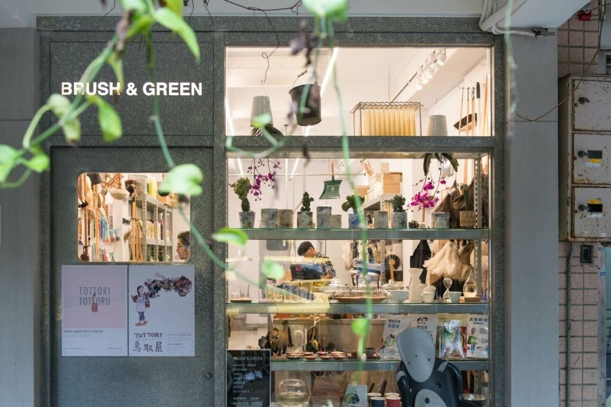

選物店推薦 ❶ THE TOWN CRIER
身在台北市四維路巷子裡，THE TOWN CRIER 是一家很有態度的生活用品小店。沒有譁眾取寵的宣傳，不走天花亂墜的大拍賣式行銷，光靠店主從世界角落收集來的 好東西，便足以讓識貨的台北人前仆後繼地朝聖。口有著大大的街廓、寬敞的行人空間，予人一種彷彿置身國外的錯覺。主理人 Luke 一邊很有耐心地為小編介紹各 種生活雜貨，同時又不斷與熙來攘往的鄰里住戶們寒暄；這家店販售的不僅是美觀實用的生活道具，還徹底地實踐著不造作的美好生活啊。
TOWN CRIER（傳令者）的店名來自於古代的倫敦，在沒有報紙、電話的年代，政府法令與當地資訊都得靠人搖鈴宣布。THE TOWN CRIER 自許為這樣的角色，要把在世界各地看見的美好，告訴大家。 所以 THE TOWN CRIER 選貨的脈絡，便是當主人翁在世界各地出差、旅行時發現了好東西，經過試用後才決定是否帶回台灣販售。採購地區以歐洲為主（如瑞典、德國、英國等），但是來自美國、日本或其他地方的好物也不會放過。
送給朋友一個「一輩子不會壞掉」的禮物，你可以來 THE TOWN CRIER 找找；這裡有許多商品標榜 Lifetime（終身保固），保證可以用上一輩子。 此外， THE TOWN CRIER 還是一家「有機」的選物店，喜歡以不同元素撞擊出無違和感的主題，而且每半年會在這裡發表一個全新的居家提案。提倡以「企劃」 做為重點的銷售，這次來逛店裡賣的是植物、園藝商品，下回主打的可能變成清潔系列。擅長用視覺、陳列來說故事，告訴消費者為什麼你「需要」擁有這些東西。

店家資訊：THE TOWN CRIER
地址：台北市大安區四維路 76 巷 7 號 1 樓
選物店推薦❷ niko and…TAIPEI
niko and…原是日本東京的複合式雜貨品牌，成軍十年後在日本已擁有超過百家分店，並於 2017 年在台北東區開設第一間台灣旗艦店。離開 THE TOWN CRIER 後，小編決定步行前往參觀。 附了販售男女時裝，店裡有約莫 1/2 的範圍在主打生活小物，從收納用品、餐具到手帳等應有盡有，逛累了還可以試試有點厲害的「餐食區」，招牌的 niko pan（麵包）據說台灣有別處吃不到的獨家口味喔～
SMITH 是 niko and…自創的雜貨品牌，它的背後還有一個虛構的身世：在美國賓州錢伯斯堡、靠近阿帕拉契山脈的山腳下，有一間橫跨三個世代經營的 OLD SMITH HARDWARE Co. 公司。
與 A Design&Life Project 氣味相投，店裡也引進了許多他們的商品。據說，明年起這個來自台灣的品牌也將進駐 niko and…的東京旗艦店喔。
Laundromat 是投幣式洗衣店的意思，在像紐約這樣的大都市裡，每區都會有投幣式洗衣店的存在，它逐漸演變成一種生活中人與人可以相互交流的場域。niko and…便以 Laundromat 為名，發想出一系列的浴室用品和洗衣相關產品。
位在最熱鬧的忠孝東路、敦化南路口，下回路過別忘了去拜個碼頭，感受一下日式雜貨的魅力！
店家資訊：niko and…TAIPEI
地址：台北市大安區忠孝東路四段 142 號 1 樓
選物店推薦 ❸ BRUSH & GREEN
大安區，小編來到位於台北市後火車站的太原路，尋找久仰大名的雜貨小店 BRUSH & GREEN。它是中山區知名選貨店 61Note 的分店，與其他販售生活雜貨的賣家不同， BRUSH & GREEN 是一間以各式各樣「刷子」與綠色生活為主題的概念店，搜集了來自世界各地超好用的清潔用品。
門口看起來有幾分工業風的味道；一推開門，滿目的商品整整齊齊地陳列著，也有一種走進人家倉庫的錯覺。BRUSH & GREEN 的老闆是日本長大華僑東泰利，與小編聊 天時講話還有幾分淡淡的日本口音；他說店裡的主打商品是來自德國、擁有 75 年歷史的刷具品牌 Redecker，從大到小、各種用途的刷子你都能在這裡找到。
除了刷具，各式與「清潔」相關的商品 BRUSH & GREEN 也都有涉獵。像是肥皂、沐浴用品，甚至還有一些有機的食物等，讓你在洗滌空間之餘，還可以順便淨化自己身體的內、外在。 鴕鳥毛撢子原本是店內自用， 在客人們高度詢問之下順應民意而引進。很適合拿來拂去沙發表面或是電視、電腦螢幕上的塵埃，不用的時候又可以當作空間中的裝飾，超有存在感！
店裡還有由美國直接進口的薰香（如秘魯檀香聖木、雪松等），只要用火點燃，室內馬上充滿一種草本的香氣！就像台灣人使用「艾草」，這些薰香原本也是美國原住民在 舉行儀式時使用；而在家裡點上則像是一種心靈的淨化，把外面不好的情緒、壓力過濾掉，歸零重新開始。
二樓劃為展覽空間，沒有展覽的時候則以販售陶瓷、木工作品為主。小編拜訪的時候正在展出以日本「鳥取縣」為主題的展覽，還搭配了攝影師濱田英明的影像作品。 如果覺得自己忙得一團亂、心情很阿雜，不妨抽空走一趟 BRUSH & GREEN，身心都打掃乾淨吧！
店家資訊：BRUSH & GREEN
地址：台北市大同區太原路 142-14 號